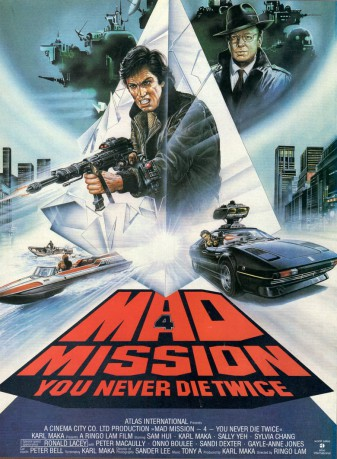

#11520 Mad Mission 4 - Man stirbt nicht zweimal
Alternativ: Mad Mission 4: You Never Die Twice (Englischer Titel)
 
 IMDB-Wertung: 5.9 / 10
IMDB-Wertung: 5.9 / 10  Metascore: 0
Metascore: 0 
Professor Ernest Bright hat eine unglaubliche Erfindung gemacht: Einen Kristall, mit dem man aus normalen Menschen unbezwingbare Muskelmänner fabrizieren kann. Leider hat sein verbrecherischer Assistent den skrupellosen Mr.H über diese revolutionäre Erfindung informiert. Mr.H ist entschlossen, den Kristall in seine Gewalt zu bekommen und schickt seine Killer aus. Prof. Bright kommt ums Leben. Sam und Sally, die Töchter des Professors, können mit dem Prisma entkommen. Sie bitten ihren Freund Kodijack um Hilfe. Mr.H gibt aber so schnell nicht auf.
Jahr: 1986
Dauer: 98 Minuten
FSK: 16
Land: Hong-Kong Studio: Astro DistributionTonspuren:
Untertitel: Deutsch,
Auflösung: 1080p (1920x800) Größe: 6717 MB
Genre: Action, Komödie
Regisseur:  Ringo Lam
Ringo Lam
Drehbuch: Ringo Lam, Karl Maka
Soundtrack: Tony A.
Darsteller:
 Samuel Hui als King Kong
Samuel Hui als King Kong Karl Maka als Albert Au
Karl Maka als Albert Au Sylvia Chang als Supt. Nancy Ho
Sylvia Chang als Supt. Nancy Ho- Sally Yeh als Sally Bright
 Ronald Lacey als The Boss
Ronald Lacey als The Boss Roy Chiao als The Professor
Roy Chiao als The Professor Tat-Wah Cho als Hua
Tat-Wah Cho als Hua- Kien Shih als Interpol Hockey Teach Coach
- Kwok Chi Tsang als Tour Bus Passenger
 Ging Man Fung als Albert's 9th Floor Neighbor
Ging Man Fung als Albert's 9th Floor Neighbor- Onno Boelee als Hornsby
- Peter McCauley als Digger
- Sandy Dexter als Henchman
- Gayle-Anne Jones als Henchwoman
- Cyrus Wong als Baldy Jr.
- Tak-Hing Kwan als HK Police Hockey Team Coach
- Pomson Shi als Professor's Assistant
Datei: X:\HD-Eastern-Collections\Mad Mission\Mad Mission 4 - Man stirbt nicht zweimal (1986, FSK16, 1920x800).mkv seit 22.07.2019
Festplatte: HD Eastern+Western
 Es gibt insgesamt 7 Filme in der Gruppe 'HD-Eastern-Collections\Mad Mission'
Es gibt insgesamt 7 Filme in der Gruppe 'HD-Eastern-Collections\Mad Mission'